반찬(진열)쇼케이스
반찬가게 냉장고, 진열·작업·김치용으로 나눠 준비하기
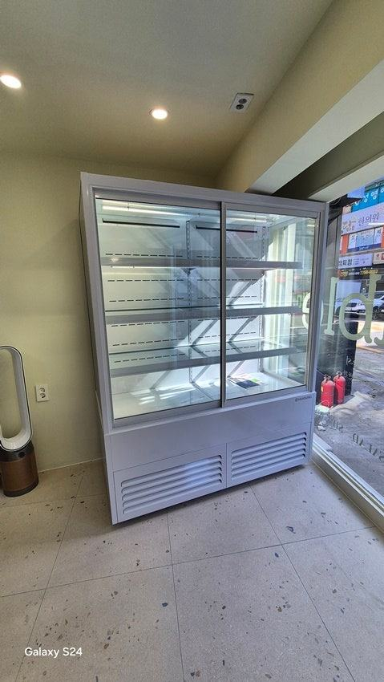
반찬가게 냉장고는 한 대로 다 해결하기보다 진열 쇼케이스, 작업용 업소 냉장고, 김치·젓갈용 저온 보관을 역할별로 나눠 준비하는 것이 반찬 상태를 지키기 쉽습니다. 가정용 냉장고는 문을 자주 여닫는 매장 환경에서 온도 회복이 늦어 반찬 품질이 들쭉날쭉해질 수 있으니 업소용으로 준비하세요.
안녕하세요, 반찬가게 진열장과 냉장 설비를 맞춰 만드는 한성쇼케이스입니다.
반찬가게를 처음 여시는 사장님들 중에는 집에서 쓰던 큰 냉장고나 가정용 김치냉장고로 시작해 보려는 분들이 계십니다.
초기 비용을 아끼고 싶은 마음은 충분히 이해되지만, 막상 영업을 시작하면 하루에 수없이 문을 여닫게 되죠.
반찬은 종류마다 원하는 보관 조건이 다릅니다. 김치는 일정한 저온이 중요하고, 나물은 마르지 않게 지켜야 하고, 볶음과 조림은 식힌 뒤 빨리 냉장해야 합니다.
냉장고 한두 대로 이 조건을 다 맞추기는 어렵습니다.
오늘은 반찬가게에 필요한 냉장고를 역할별로 나눠 보고, 고를 때 무엇을 확인해야 하는지 정리해 드리겠습니다.
1. 역할별로 필요한 냉장고 세 가지
첫째는 손님에게 반찬을 보여 주는 진열 쇼케이스입니다. 매장의 얼굴이자 판매대라 유리 너머로 반찬이 잘 보이고 칸마다 온도가 고르게 유지되는 것이 중요합니다.
둘째는 주방에서 만든 반찬과 재료를 넣어 두는 작업용 업소 냉장고입니다. 큰 용기와 트레이가 드나드니 문이 넓고 내부를 닦기 쉬운 스테인리스가 편합니다.
셋째는 김치, 젓갈, 장아찌처럼 더 낮고 일정한 온도가 필요한 반찬을 따로 두는 저온 보관 냉장고입니다.
- 진열 쇼케이스: 보여 주며 판매
- 작업용 업소 냉장고: 재료·완성 반찬 보관
- 저온 보관 냉장고: 김치·젓갈·장아찌
2. 가정용 냉장고로 버티기 어려운 이유
가정용 냉장고는 하루에 몇 번 여닫는 환경을 기준으로 만들어집니다. 반찬가게에서는 손님 응대와 보충 때문에 문 여는 횟수가 훨씬 많아, 한번 올라간 온도가 다시 내려오기 전에 또 문을 열게 됩니다.
이런 상태가 반복되면 같은 날 만든 반찬도 칸마다 상태가 달라지고, 여름에는 변질 위험이 커집니다. 업소용은 공기를 순환시켜 온도를 빨리 회복하도록 만들어져 있어 영업 환경에 더 맞습니다.
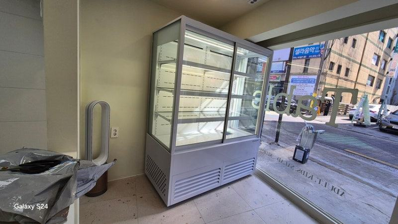
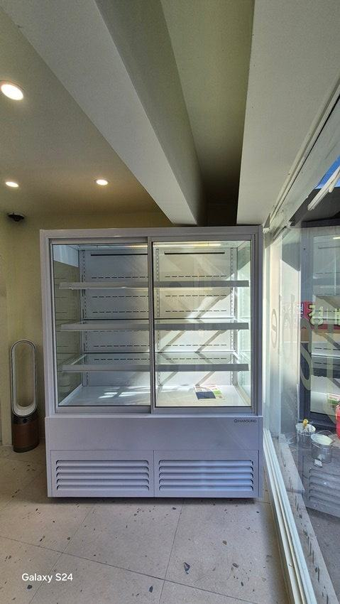
3. 인버터와 정속형, 무엇이 다를까
냉장고를 알아보다 보면 인버터와 정속형이라는 말을 듣게 됩니다. 인버터는 설정 온도에 가까워지면 압축기 속도를 낮춰 온도를 부드럽게 유지하는 방식이라 소음과 진동이 적고 전기 사용을 줄이는 데 유리합니다.
정속형은 압축기를 켰다 껐다 반복하며 온도를 맞춥니다. 구조가 단순한 대신 켜지고 꺼질 때 온도 폭이 생기고 소리도 더 들립니다.
손님과 가까운 진열 쇼케이스라면 인버터 쪽을 먼저 살펴보세요.
4. 청소하기 쉬운 구조인지
반찬은 국물과 양념이 흐르기 쉬워 냉장고 안쪽이 금방 지저분해집니다. 선반을 쉽게 빼서 씻을 수 있는지, 모서리에 양념이 끼는 틈이 없는지, 바닥 물이 빠지는 구조인지 확인하세요.
진열 쇼케이스 유리는 손님이 가장 먼저 보는 부분이라 닦기 쉬운 마감이 좋습니다. 영업을 마칠 때 남은 반찬을 작업 냉장고로 옮기고 진열 칸을 닦는 순서를 정해 두면 위생 관리가 습관이 됩니다.
- 선반 분리 세척 가능 여부
- 모서리 틈과 배수 구조
- 마감 후 진열 칸 청소 순서
체크리스트
- 진열·작업·저온 보관 역할 구분
- 문 여는 횟수에 맞는 업소용 사양
- 인버터·정속형 확인
- 선반 세척과 배수 구조
- 반찬 종류별 칸 배치
현장에서 자주 보는 경우: 기존 냉장고 온도 편차로 반찬 상태가 들쭉날쭉할 때
반찬가게 사장님들과 상담하다 보면 기존 냉장고의 온도 편차 때문에 같은 반찬도 날마다 품질이 다르다는 고민을 자주 듣습니다.
변질로 버리는 반찬이 많아 냉장고 교체를 알아보시는 경우도 있습니다.
이럴 때는 단순히 차갑게 하는 기능보다 온도를 일정하게 지키고 습도와 공기 순환까지 고려한 냉장고가 필요하다고 안내해 드립니다.
김치류는 일정한 저온을, 나물류는 건조를 막는 환경을 갖추도록 반찬 종류에 맞춰 구성을 잡고, 매장 동선에 맞춘 디자인으로 제작합니다.
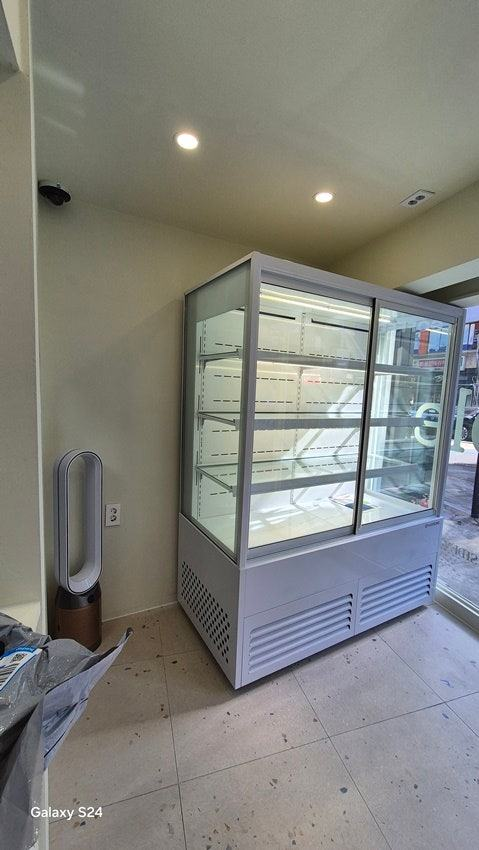
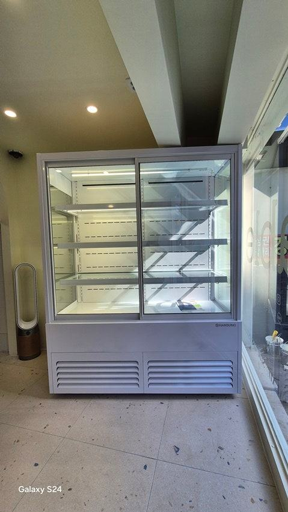
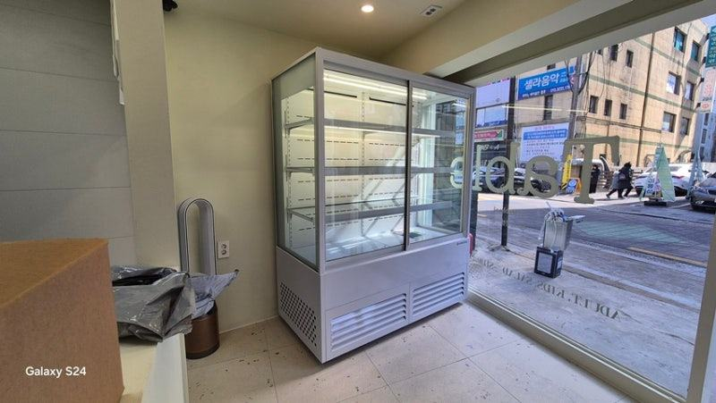
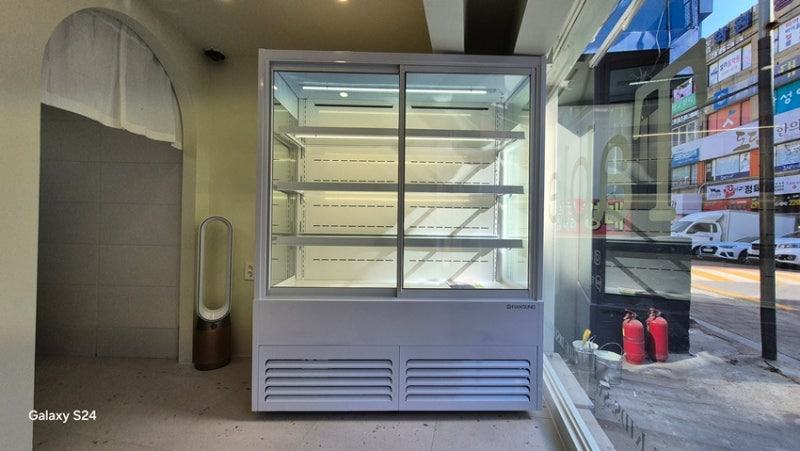
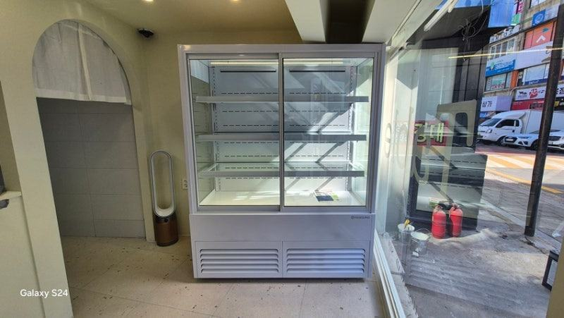
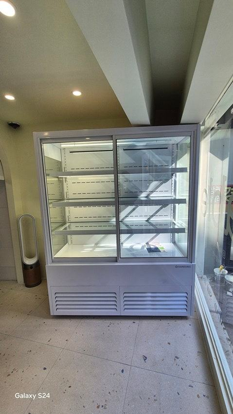
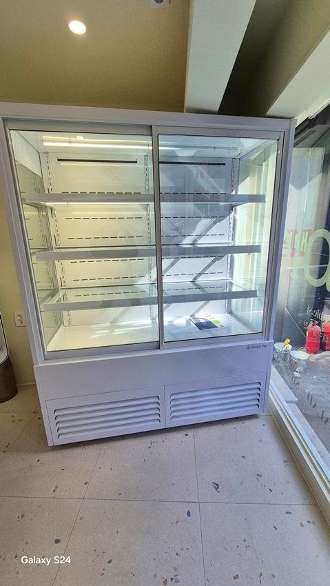
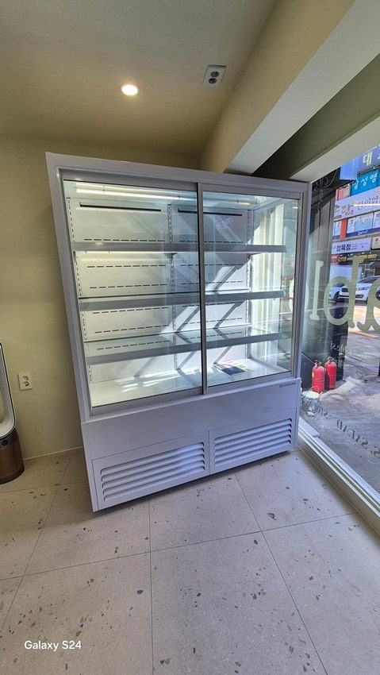
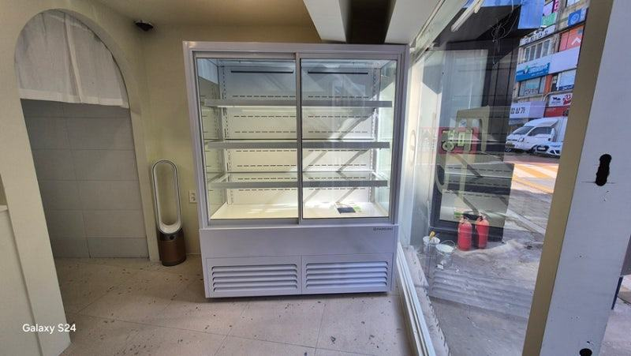

자주 묻는 질문
작은 반찬가게인데 냉장고를 세 대나 둬야 하나요?
매장 규모에 따라 진열 쇼케이스 아래에 보관 칸을 둔 구성이나, 작업 냉장고 안에 저온 칸을 나눈 구성으로 줄일 수 있습니다.
역할을 나누는 것이 핵심이고 대수는 공간에 맞춰 정하시면 됩니다.
김치를 진열 쇼케이스에 함께 넣어도 되나요?
넣을 수는 있지만 냄새가 다른 반찬에 배기 쉽고 필요한 온도도 다를 수 있습니다. 진열용은 소량만 두고, 나머지는 저온 보관 냉장고에서 꺼내 채우는 방식을 권해 드립니다.
반찬 진열 쇼케이스 온도는 몇 도로 맞추면 되나요?
반찬 종류와 진열 시간에 따라 달라 한 가지 숫자로 정하기 어렵습니다. 식품 위생 기준과 레시피별 보관 조건을 확인해 설정하시고, 칸마다 온도 차이가 크지 않은지 매일 확인해 주세요.
매장 조건에 맞춰 만드는 한성쇼케이스
원하시는 제품 사진과 설치할 공간 사진만 보내 주셔도 매장에 맞는 구성을 추천해 드립니다.
- 전국 240여 개 A/S 전담 센터 운영
- 본사 대량 자재 매입으로 품질 대비 합리적인 가격
- 유럽제·삼성 냉각 콤프레셔 적용
- 국내 최초 쇼케이스 전문 디자이너 상주
매장 폭과 원하는 진열 구성을 알려 주세요. 실측과 견적을 안내해 드립니다.
031-986-2458